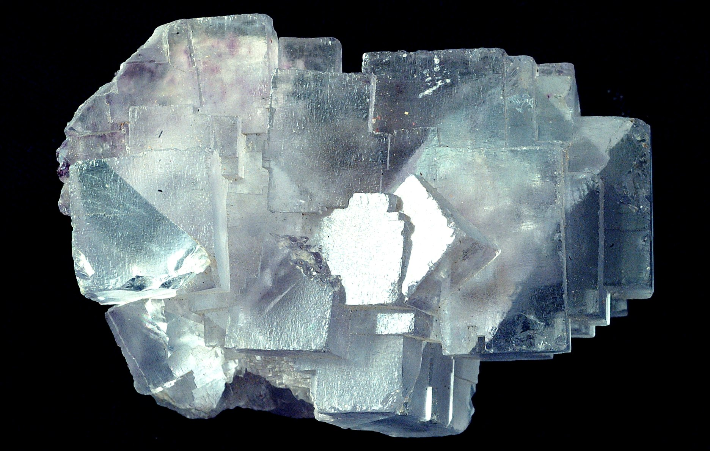
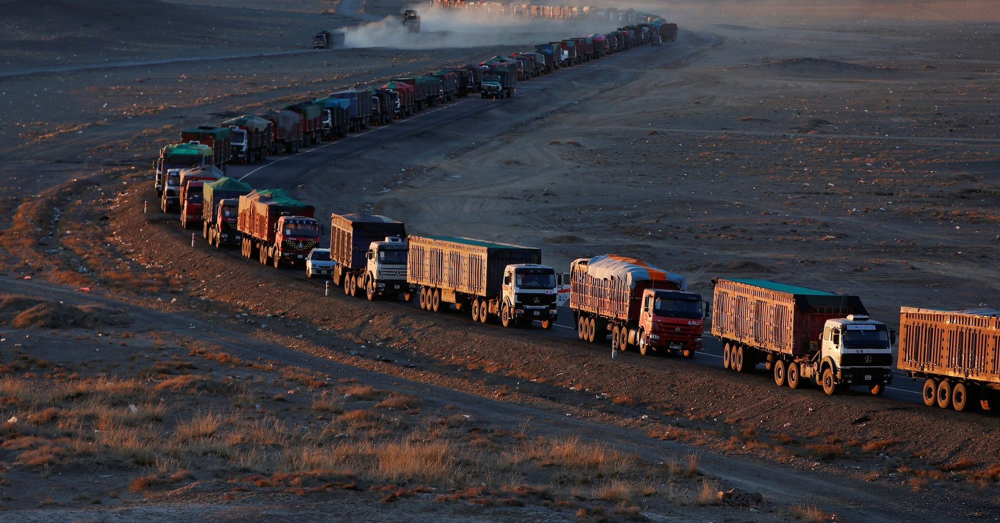
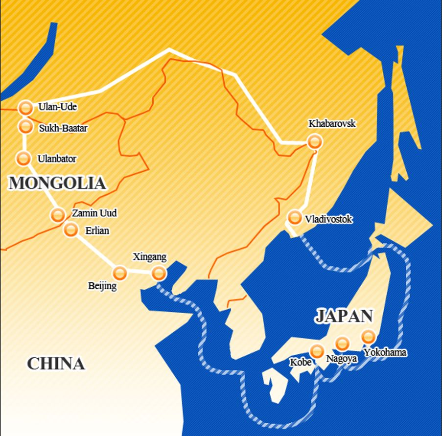

鉱物資源の輸出入・販売
モンゴル産の蛍石・原料を中心に、日本向けをはじめとした海外市場へ供給・輸出します。
ALTAN KHULEG RESOURCES LLC
Two Countries. One Direction.
MONGOLIAN RESOURCES.
TO JAPAN AND BEYOND.
モンゴルの資源を、日本へ。そして世界へ。
ABOUT US 会社紹介
ALTAN KHULEG RESOURCES LLC（アルタン・フレグ・リソーシズ）は、 日本とモンゴルの共同出資により設立された資源トレーディング会社です。
モンゴル産の蛍石（フローライト）や銅を中心に、日本市場をはじめとした 世界の産業へ資源を供給。調達から品質管理、輸出、国際物流までを一貫して手がけ、 信頼されるパートナーとして長期的な価値を創造していきます。
OUR BUSINESS 事業内容
モンゴル産の蛍石・原料を中心に、日本向けをはじめとした海外市場へ供給・輸出します。
鉱物資源以外の取引についても、モンゴルと世界をつなぐ貿易事業を展開します。
鉱山・資源事業への投資や、モンゴルでの事業展開に関するコンサルティングを行います。
不動産、飲食、ホテル、観光ガイド等、モンゴルにおける多角的な事業を展開します。
石油・石油製品・天然ガス等のエネルギー資源の取扱いを目指します。
OUR RESOURCES 取扱資源

FLUORSPAR
モンゴル産の高品位蛍石を、日本の産業へ安定供給。当社の中核事業です。
COPPER
モンゴルの豊富な銅資源を、新たな市場へ。取引体制の構築を進めています。

COAL
石炭をはじめとする鉱物資源へ、取扱品目を順次拡大していきます。
ENERGY RESOURCES
石油・石油製品・天然ガス等のエネルギー分野への展開を目指します。
OUR STRENGTHS 私たちの強み
両国の視点とネットワークを活かし、双方にとって信頼できる取引を実現します。
元外交官・日本駐在経験を持つ代表が、各方面とのパイプを活かし事業を推進します。
鉱山側と継続的な供給について合意しており、安定した資源調達を目指します。
日本企業の品質・成分・粒度等の要求に合わせた商品供給を行います。
調達から輸出、国際物流までを一貫して管理し、安定したサプライチェーンを構築します。
MONGOLIA × JAPAN 経営体制
日本とモンゴル、両国のパートナーによる共同出資から ALTAN KHULEG RESOURCES は生まれました。
CHAIRMAN 会長
PRESIDENT & REPRESENTATIVE DIRECTOR 代表取締役社長
FROM MINE TO MARKET 鉱山から、日本市場へ。
MINE
モンゴル国内の鉱山から資源を調達します。
QUALITY CHECK
成分・品位・粒度などを厳格にチェックします。
ALTAN KHULEG
取引全体を統括し、責任を持って手配します。
EXPORT
独自ルートによる安全な輸送・通関を行います。
TO JAPAN
日本企業へ資源を安定的に供給します。

モンゴルは海港を持たない内陸国です。ウランバートルで集荷した資源を陸路で ロシア・ウラジオストク港へ輸送し、港湾で積み替えたのち日本へ海上輸送します。 当社は各区間の輸送・通関を一貫して管理し、安定した供給を実現します。
OUR VISION 私たちのビジョン
PHASE 01 現在
モンゴル産の蛍石・銅を中心に、日本市場へ供給します。
PHASE 02 次のステージ
石炭をはじめとする幅広い鉱物資源へ、取扱いを拡大します。
PHASE 03 未来
石油・石油製品・天然ガス等のエネルギー分野へ展開します。
モンゴルと日本、そして世界とともに成長する
資源・エネルギートレーディング企業へ。
OUR BASES 拠点紹介
ULAANBAATAR HEAD OFFICE
CONTACT お問い合わせ
モンゴル産資源のご購入、パートナーシップ・投資に関するご相談など、 下記よりお問い合わせください。
surita@altankhuleg-r.com
COMPANY 会社概要